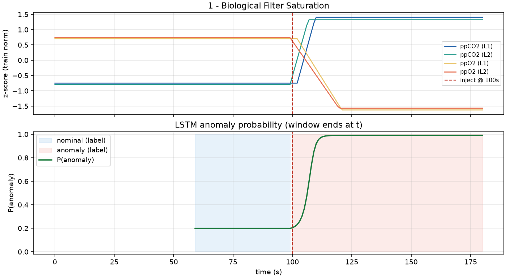

Stage-2 example · top: channels on a common z-score scale · bottom: P(anomaly) after each window end
Per-sensor mean / std from the training windows; frozen for validation and live inference
Absolute offsets can be diagnostic — we do not re-center each 60 s crop on its own
Mixed units share one scale so the LSTM can weigh cross-channel dynamics